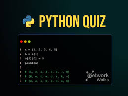
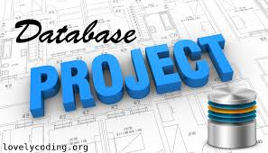

📂 My Projects
Here are some of the projects I have worked on during my learning journey.

Portfolio Website
A personal portfolio built with HTML, CSS, and JavaScript.

ICT Teaching Tools
Digital resources for engaging classroom learning.

Database Project
A small database project using SQL.